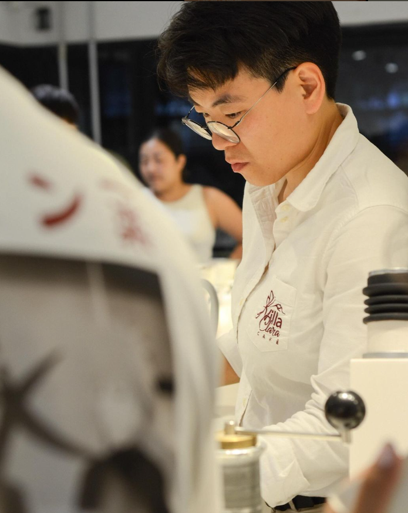
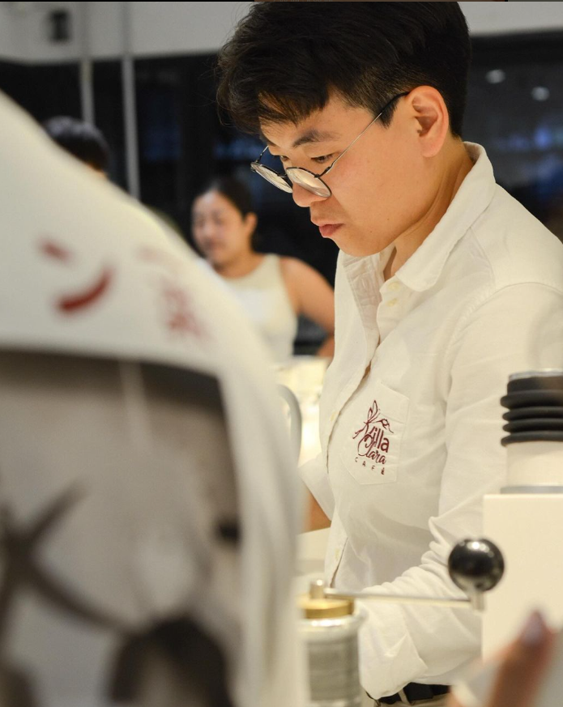

Experience the Finest Coffee Beans and Gear delivered to your Door
Explore our curated selection of the finest coffee beans and top-tier equipment, all conveniently delivered to your doorstep.
More Information
About Satori
Embark on a journey to discover the most exquisite and delightful coffee experiences. Let us guide you to your perfect cup, ensuring every sip is a moment of pure bliss.

Discover the Stories of Satori Specialty Coffee


 

★★★★★
Satori Specialty Coffee has truly changed my coffee-drinking experience. Their beans are of the highest quality and their brewing methods result in a rich and flavorful cup every time. I can't imagine starting my day without a cup of Satori coffee.
Coffee Connoisseur
FAQ's
Find your
answers
What makes Satori unique?
At Satori, we pride ourselves on our dedication to uniqueness, extending far beyond the beans we use. These beans undergo a carefully crafted roasting process, expertly executed by our skilled baristas. The result? A flavor profile that stands out, offering a rich and memorable coffee experience found nowhere else. We're committed to enhancing your coffee moments with each visit, delivering a truly exceptional brew every time.
Where do you source your coffee beans from?
We take immense pride in the transparency of our sourcing process. Our coffee beans are meticulously selected from Ethiopia and Brazil, where sustainable farming practices and ethical standards are paramount. We prioritize direct relationships with farmers to ensure fair trade and quality control at every step. By sharing the origin of our beans, we invite you to connect with the story behind each cup, embracing a journey that begins at the source and culminates in the delightful experience you savor with every sip.
How do you ensure the freshness of your coffee?
Ensuring the freshness of our coffee is a top priority at Satori. We meticulously roast our coffee beans in small batches to maintain optimal flavor and aroma. Additionally, we package our coffee immediately after roasting, utilizing specialized techniques to preserve its freshness during storage and transportation. From bean to cup, we're committed to delivering an unparalleled coffee experience.
Do you offer any specialty drinks or unique flavor combinations?
At Satori, we take pride in crafting a diverse menu that caters to all tastes. In addition to our exceptional espresso, filter, and milk-based coffees, we also offer a selection of specialty drinks featuring unique flavor combinations that are sure to tantalize your taste buds. Whether you're craving a classic espresso or looking to explore something new and exciting, we have the perfect beverage to accompany our delicious pastries. Our menu is designed to delight and surprise, ensuring that every visit to Satori is a memorable experience.
What sets your coffee shop ambiance apart?
We believe ambiance is as important as the coffee itself. Our coffee shop offers a unique and inviting atmosphere that sets us apart. From the moment you step through our doors, you'll be enveloped in a warm and welcoming environment, designed to inspire relaxation and creativity. Our carefully curated decor, comfortable seating options, and soothing background music create the perfect backdrop for enjoying your favorite brew or pastry. Whether you're looking for a quiet space to work or a cozy spot to catch up with friends, our ambiance sets the stage for a truly memorable coffee experience.
Do you host any coffee tasting events or workshops?
At Satori, we love sharing our passion for coffee with our community. We regularly host coffee tasting events and workshops where you can immerse yourself in the world of specialty coffee. Led by our knowledgeable baristas, these events provide a unique opportunity to learn about different coffee varieties, brewing techniques, and flavor profiles. Whether you're a coffee connoisseur or just starting to explore the world of specialty coffee, our events are designed to educate and inspire. Keep an eye on our events calendar for upcoming tastings and workshops, and join us for an unforgettable coffee experience!